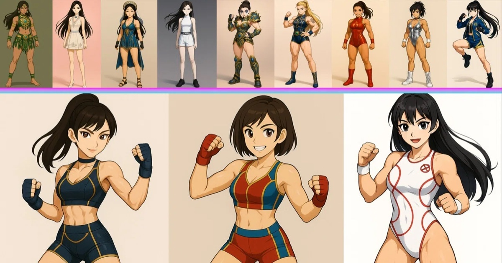

第1話 “戦う淑女”
世界中が熱狂する格闘興行《フェアレディ・クラッシュ》。炎をまとうファイアブレイズと、月光のように舞うセレナ・ルナの激突を目撃したサラは、フェアレディという存在に強く惹かれていく。
第1話へ世界中が熱狂する格闘興行《フェアレディ・クラッシュ》。
そのリングに立つのは、女神アーリアの加護を受け、フェアコアと呼ばれる力を宿した少女たち。彼女たちは“戦う淑女”――フェアレディとして、強さと美しさ、誇りと覚悟を賭けて戦う。
何も持たない少女・サラは、ある日、圧倒的な強さを見せるフェアレディたちの試合に心を奪われる。
「あの光の中へ行きたい」「あの人みたいに、誰かを守れる存在になりたい」
その想いを胸に、サラは地元最強と呼ばれるフェアレディ・響のもとへ向かう。
これは、憧れから始まった少女が、仲間と出会い、敗北を知り、やがて本当の強さへ辿り着く物語。